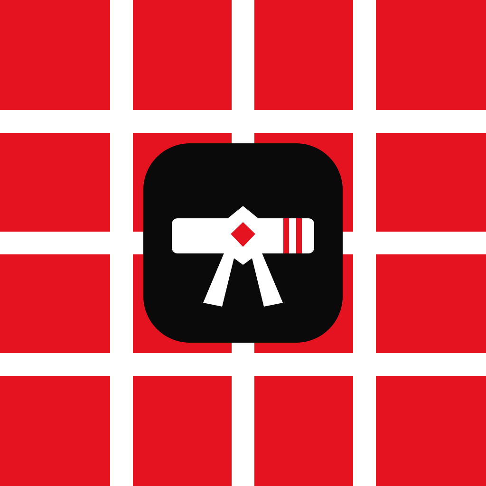

Minha Próxima Faixa by tatame0
The SVG is the single source for the graduation-specific icon. Its belt and two rank stripes distinguish it from the other Tatame0 apps.

From the repository root, run bash assets/render-icon.sh to refresh the Expo, Android, and native iOS 1024px PNG assets.